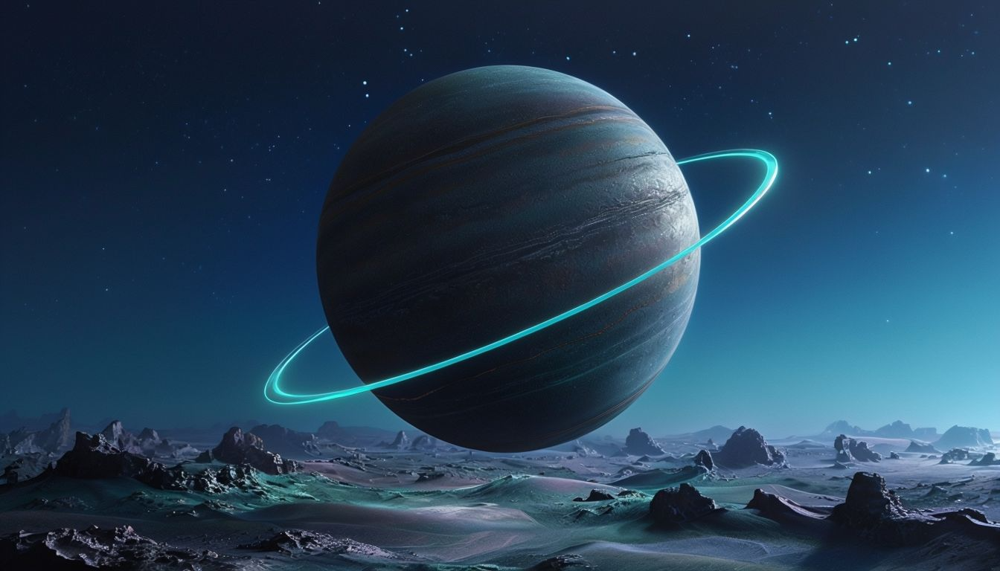

Sky is Amazing
There is our article
The Beauty of the Sky
The sky is a canvas painted with hues of blue, orange, and pink during sunrise and sunset. It is a reminder of the beauty that surrounds us.
Whether it's a clear day or a starry night, the sky has a way of captivating our hearts and minds. From the clouds that float by to the stars that twinkle above, the sky is a source of inspiration and wonder. So next time you look up, take a moment to appreciate the beauty of the sky and all it has to offer. Let it remind you of the vastness of the universe and the possibilities that lie ahead.